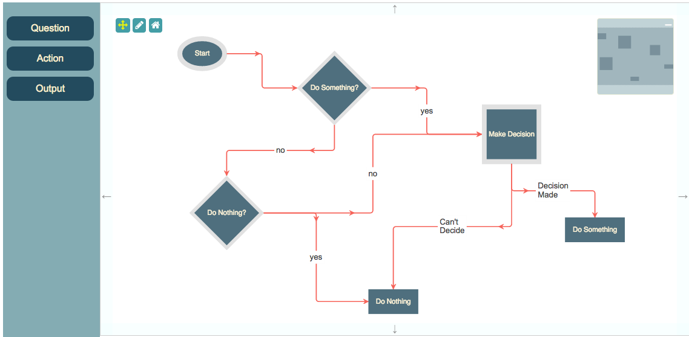
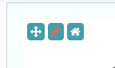
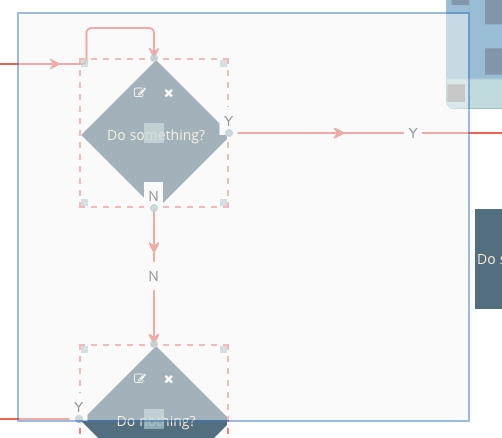

Flowchart Builder (Angular 4 Typescript)
This is a port of the Flowchart Builder application that demonstrates the Toolkit's Angular 4 Typescript integration. Note that this particular
demonstration is written with SystemJS, but there is an exact copy available in angular-cli; the differences between that demo and this
are detailed here.
There are also Angular 2 versions of this demo (and its CLI counterpart) available in angular2 and angular2-cli respectively.

This page gives you an in-depth look at how the application is put together.
- package.json
- Page Setup
- Typescript Setup
- SystemJS Setup
- Templates
- Bootstrap
- Toolkit Parameters
- Render Parameters
- View
- Initialisation
- Data Loading
- Behaviour
- Resizing/Dragging Nodes
- Selecting Nodes
- Dialogs
- Dragging New Nodes
jsPlumb's Angular 2 integration and demonstrations are based on the Angular 2 Quickstart Guide.
package.json
{
"scripts": {
"tscr":"tsc -traceResolution",
"tsc":"tsc"
},
"dependencies": {
"@angular/common": "~2.4.0",
"@angular/compiler": "~2.4.0",
"@angular/core": "~2.4.0",
"@angular/forms": "~2.4.0",
"@angular/http": "~2.4.0",
"@angular/platform-browser": "~2.4.0",
"@angular/platform-browser-dynamic": "~2.4.0",
"@angular/router": "~3.4.0",
"@angular/upgrade": "~2.4.0",
"systemjs": "0.19.40",
"core-js": "^2.4.1",
"reflect-metadata": "^0.1.8",
"rxjs": "~5.0.2",
"zone.js": "^0.7.4",
"jsplumbtoolkit":"file:../../jsplumbtoolkit.tgz",
"jsplumbtoolkittypes":"file:../../types/jsplumbtoolkit",
"jsplumbtypes":"file:../../types/jsplumb",
"font-awesome": "^4.7.0"
},
"devDependencies": {
"concurrently": "^3.0.0",
"typescript": "~2.0.10"
}
}
As with the systemjs-config.js file discussed below, this was taken directly from the Angular 2 Quickstart Guide.
There are three entries specific to jsPlumb:
"jsplumbtoolkit":"file:../../jsplumbtoolkit.tgz",
"jsplumbtoolkittypes":"file:../../types/jsplumbtoolkit",
"jsplumbtypes":"file:../../types/jsplumb"
The first of these is the jsPlumb Toolkit code. The other two entries link to the Typescript Definition files, which are discussed here.
Page Setup
CSS
<link href="//maxcdn.bootstrapcdn.com/bootstrap/3.2.0/css/bootstrap.min.css" rel="stylesheet">
<link href="node_modules/font-awesome/css/font-awesome.min.css" rel="stylesheet">
<link rel="stylesheet" href="node_modules/jsplumbtoolkit/dist/css/jsplumbtoolkit-defaults.css">
<link rel="stylesheet" href="node_modules/jsplumbtoolkit/dist/css/jsplumbtoolkit-demo.css">
<link rel="stylesheet" href="app.css">
Font Awesome, Bootstrap, jsplumbtoolkit-demo.css, and app.css are used for this demo and are not jsPlumb Toolkit requirements. jsplumbtoolkit-defaults.css is recommended for
all apps using the Toolkit, at least when you first start to build your app. This stylesheet contains sane defaults for the various widgets in the Toolkit.
JS
<script src="node_modules/core-js/client/shim.min.js"></script>
<script src="node_modules/zone.js/dist/zone.js"></script>
<script src="node_modules/systemjs/dist/system.src.js"></script>
<script src="systemjs.config.js"></script>
<script>
System.import('app').catch(function(err){ console.error(err); });
</script>
We use SystemJS as the loader for this application; this is fairly common with Angular 2 apps. The actual source files, which are Typescript files in the src directory, are:
- src/main.ts Launcher
- src/app.module.ts Application module definition
- src/app.component.js Main demo component and business logic.
Typescript Setup
This is the tsconfig.json file used by this demonstration:
{
"compilerOptions": {
"target": "es5",
"module": "commonjs",
"moduleResolution": "node",
"sourceMap": true,
"emitDecoratorMetadata": true,
"experimentalDecorators": true,
"lib": [ "es2015", "dom" ],
"noImplicitAny": true,
"suppressImplicitAnyIndexErrors": true
},
"include":[ "src/**/*" ]
}
The two things to note here are that we use commonjs as the module type, and we have moduleResolution set to node. Both of these settings are required by jsPlumb.
SystemJS Setup
Note for a discussion of Angular CLI, see here.
This is the config file for SystemJS we use in this demonstration. This is taken directly from the Angular 2 Quickstart Guide, with the addition of entries for the Community and Toolkit editions of jsPlumb:
/**
* System configuration for Angular samples
* Adjust as necessary for your application needs.
*/
(function (global) {
System.config({
paths: {
// paths serve as alias
'npm:': 'node_modules/'
},
// map tells the System loader where to look for things
map: {
// our app is within the app folder
app: 'src',
// angular bundles
'@angular/core': 'npm:@angular/core/bundles/core.umd.js',
'@angular/common': 'npm:@angular/common/bundles/common.umd.js',
'@angular/compiler': 'npm:@angular/compiler/bundles/compiler.umd.js',
'@angular/platform-browser': 'npm:@angular/platform-browser/bundles/platform-browser.umd.js',
'@angular/platform-browser-dynamic': 'npm:@angular/platform-browser-dynamic/bundles/platform-browser-dynamic.umd.js',
'@angular/http': 'npm:@angular/http/bundles/http.umd.js',
'@angular/router': 'npm:@angular/router/bundles/router.umd.js',
'@angular/forms': 'npm:@angular/forms/bundles/forms.umd.js',
'jsplumbtoolkit':"npm:jsplumbtoolkit/dist/js/jsplumbtoolkit.js",
// other libraries
'rxjs': 'npm:rxjs',
'angular-in-memory-web-api': 'npm:angular-in-memory-web-api/bundles/in-memory-web-api.umd.js'
},
// packages tells the System loader how to load when no filename and/or no extension
packages: {
app: {
main: './main.js',
defaultExtension: 'js'
},
rxjs: {
defaultExtension: 'js'
}
}
});
})(this);
The jsPlumb Toolkit is referenced in package.json as a local file.
Templates
There are four templates used by the app - one each for the node types of Question, Action and Output, and one
for the Start node. These are stored as html files in the templates directory.
The templates look like this:
Start
<div [style.width]="obj.w + 'px'" [style.height]="obj.h +'px'" class="flowchart-object flowchart-start">
<div style="position:relative">
<svg [attr.width]="obj.w" [attr.height]="obj.h">
<ellipse [attr.cx]="obj.w/2" [attr.cy]="obj.h/2" [attr.rx]="obj.w/2" [attr.ry]="obj.h/2" class="outer"/>
<ellipse [attr.cx]="obj.w/2" [attr.cy]="obj.h/2" [attr.rx]="(obj.w/2) - 10" [attr.ry]="(obj.h/2) - 10" class="inner"/>
<text text-anchor="middle" [attr.x]="obj.w / 2" [attr.y]="obj.h / 2" dominant-baseline="central"></text>
</svg>
</div>
<jtk-source port-type="start" filter=".outer" filter-negate="true"></jtk-source>
</div>
The Start node consists of an ellipse with a text label centered inside of it. Note that all references to the node data that is being rendered are prefixed
with obj.. For instance, the first line in the template here is:
<div [style.width]="obj.w + 'px'" [style.height]="obj.h +'px'" class="flowchart-object flowchart-start">
but in the version of this demo using the default templating mechanism it looks like this:
<div style="width:${w}px;height:${h}px;">
- As with the default templating mechanism (and in contrast to the Toolkit's Angular 1.x integration), we expect one root element per template.
The jtk-source element declares that this node is an edge source, of type start (the port-type attribute
specifies this). The filter attribute instructs the Toolkit to enable drag only from some element that is not a
child of an svg element, but then filter-negate is true: the result is that dragging will begin only from a
descendant of the svg element. What this means visually is that the user will not be able to start a drag from the
whitespace surrounding the ellipse.
Action
<div [style.width]="obj.w + 'px'" [style.height]="obj.h +'px'" class="flowchart-object flowchart-action">
<div>
<div class="node-edit node-action" (click)="editNode(obj)">
<i class="fa fa-pencil-square-o"></i>
</div>
<div class="node-delete node-action" (click)="removeNode(obj)">
<i class="fa fa-times"></i>
</div>
<svg [attr.width]="obj.w" [attr.height]="obj.h">
<rect [attr.x]="0" [attr.y]="0" [attr.width]="obj.w" [attr.height]="obj.h" class="outer"/>
<rect [attr.x]="10" [attr.y]="10" [attr.width]="obj.w-20" [attr.height]="obj.h-20" class="inner"/>
<text text-anchor="middle" [attr.x]="obj.w/2" [attr.y]="obj.h/2" dominant-baseline="central"></text>
</svg>
</div>
<jtk-target port-type="target"></jtk-target>
<jtk-source port-type="source" filter=".outer"></jtk-source>
</div>
Once again we use the position and dimensions for the node's main container as well as its SVG elements. Action nodes are
configured as both edge sources and targets.
Question
<div [style.width]="obj.w + 'px'" [style.height]="obj.h +'px'" class="flowchart-object flowchart-question">
<div>
<div class="node-edit node-action" (click)="editNode(obj)">
<i class="fa fa-pencil-square-o"></i>
</div>
<div class="node-delete node-action" (click)="removeNode(obj)">
<i class="fa fa-times"></i>
</div>
<svg [attr.width]="obj.w" [attr.height]="obj.h">
<path [attr.d]="'M ' + obj.w/2 + ' 0 L ' + obj.w + ' ' + obj.h/2 + ' L ' + obj.w/2 + ' ' + obj.h + ' L 0 ' + obj.h/2 + ' Z'" class="outer"/>
<path [attr.d]="'M ' + obj.w/2 + ' 10 L ' + (obj.w-10) + ' ' + obj.h/2 + ' L ' + obj.w/2 + ' ' + (obj.h-10) + ' L 10 ' + obj.h/2 + ' Z'" class="inner"/>
<text text-anchor="middle" [attr.x]="obj.w/2" [attr.y]="obj.h/2" dominant-baseline="central"></text>
</svg>
</div>
<jtk-source port-type="source" filter=".outer"></jtk-source>
<jtk-target port-type="target"></jtk-target>
</div>
The Question node draws a diamond, and declares itself to be an edge target and source. Note the format of the attr.d attributes on the path elements: in Angular 2,
the "square bracket" syntax expects the right hand side to contain a valid Javascript expression.
Output
<div [style.width]="obj.w + 'px'" [style.height]="obj.h +'px'" class="flowchart-object flowchart-output">
<div>
<div class="node-edit node-action" (click)="editNode()">
<i class="fa fa-pencil-square-o"></i>
</div>
<div class="node-delete node-action" (click)="deleteNode()">
<i class="fa fa-times"></i>
</div>
<svg [attr.width]="obj.w" [attr.height]="obj.h">
<rect [attr.x]="0" [attr.y]="0" [attr.width]="obj.w" [attr.height]="obj.h"/>
<text text-anchor="middle" [attr.x]="obj.w/2" [attr.y]="obj.h/2" dominant-baseline="central"></text>
</svg>
</div>
<jtk-target port-type="target"></jtk-target>
</div>
The Output node is configured to be a connection target only.
Bootstrap
We use SystemJS to bootstrap the application:
<script src="systemjs.config.js"></script>
<script>
System.import('app').catch(function(err){ console.error(err); });
</script>
Here, app is a module defined in src/app.module.ts:
import { NgModule, CUSTOM_ELEMENTS_SCHEMA } from '@angular/core';
import { BrowserModule } from '@angular/platform-browser';
import { AppComponent, QuestionNodeComponent, ActionNodeComponent, StartNodeComponent, OutputNodeComponent } from './app.component';
import { jsPlumbToolkitModule } from "./jsplumbtoolkit-angular2";
import { Dialogs } from "jsplumbtoolkit"
@NgModule({
imports: [ BrowserModule, jsPlumbToolkitModule ],
declarations: [ AppComponent, QuestionNodeComponent, ActionNodeComponent, StartNodeComponent, OutputNodeComponent ],
bootstrap: [ AppComponent ],
entryComponents: [ QuestionNodeComponent, ActionNodeComponent, StartNodeComponent, OutputNodeComponent ],
schemas:[ CUSTOM_ELEMENTS_SCHEMA ]
})
export class AppModule {
constructor() {
// initialize dialogs
Dialogs.initialize({
selector: ".dlg"
});
}
}
Components
The demo is written as a root level component, which itself uses components from the jsPlumb Angular 2 module. In the HTML file, the demo component is declared with a single element:
<jsplumb-demo>Loading Flowchart Builder...</jsplumb-demo>
The jsplumb-demo component is created inside the file src/app.component.ts. Its template looks like this:
<div class="sidebar node-palette" jsplumb-palette selector="li" surfaceId="flowchartSurface" [typeExtractor]="typeExtractor">
<ul>
<li *ngFor="let nodeType of nodeTypes" [attr.jtk-node-type]="nodeType.type" title="Drag to add new">
</li>
</ul>
</div>
<jsplumb-toolkit #toolkit surfaceId="flowchartSurface" jtkId="flowchart" [view]="view" [renderParams]="renderParams" [toolkitParams]="toolkitParams" [nodeResolver]="nodeResolver"></jsplumb-toolkit>
<jsplumb-miniview surfaceId="flowchartSurface"></jsplumb-miniview>
The template uses all 3 components offered by the Toolkit's Angular 2 integration: a Toolkit instance (and associated Surface), a Miniview, and a palette from which new items can be dragged onto the canvas.
Points to note:
- The first div in the template is a Toolkit
palettecomponent. In Angular 2 components are identified by aselector, which needs only to be a valid CSS3 selector. Thepalettecomponent's selector is[jsplumb-palette], so the first div is considered to be a Palette component. - The palette is given the ID of the Surface to attach itself to (see below)
The palette is passed in a
typeExtractorusing "square bracket" syntax, which means in this case that the demo component declares a method calledtypeExtractor(whose job is to return the type of some dropped item, given the related DOM element).The jsplumb-toolkit
component is assigned a local ID oftoolkit; we capture this as aViewChild` in the demo component.We pass in both
renderParams(parameters for the Surface constructor) andtoolkitParams(parameters for the Toolkit constructor) to thejsplumb-toolkitcomponent. We also provide anodeResolver, whose job it is to map node types to components.We assign a
surfaceIdand ajtkIdto the Toolkit component.jtkId, the Toolkit's ID, is not actually used in this demo. But thesurfaceIdis used by the Palette and Miniview components.We provide the ID of the Surface to attach the
jsplumb-miniviewto.
Toolkit Parameters
The parameters passed in to the Toolkit's constructor are:
toolkitParams = {
nodeFactory:(type:string, data:any, callback:Function) => {
Dialogs.show({
id: "dlgText",
title: "Enter " + type + " name:",
onOK: (d:any) => {
data.text = d.text;
// if the user entered a name...
if (data.text) {
// and it was at least 2 chars
if (data.text.length >= 2) {
// set width and height.
jsPlumb.extend(data, this.nodeDimensions[type]);
// set an id and continue.
data.id = jsPlumbToolkitUtil.uuid();
callback(data);
}
else
// else advise the user.
alert(type + " names must be at least 2 characters!");
}
// else...do not proceed.
}
});
},
beforeStartConnect:(node:any, edgeType:string) => {
return { label:"..." };
}
}
Surface Parameters
The parameters passed in to the Surface's constructor are:
renderParams = {
layout:{
type:"Spring"
},
events: {
canvasClick: (e:Event) => {
this.toolkitComponent.toolkit.clearSelection();
},
edgeAdded:(params:any) => {
if (params.addedByMouse) {
this.editLabel(params.edge);
}
},
modeChanged:(mode:string) => {
var controls = document.querySelector(".controls");
jsPlumb.removeClass(controls.querySelectorAll("[mode]"), "selected-mode");
jsPlumb.addClass(controls.querySelectorAll("[mode='" + mode + "']"), "selected-mode");
}
},
consumeRightClick:false,
dragOptions: {
filter: ".jtk-draw-handle, .node-action, .node-action i"
}
};
View
The view contains the definitions of node/edge appearance and behaviour:
view = {
nodes:{
"start":{
template:"StartNode"
},
"selectable": {
events: {
tap: (params:any) => {
this.toggleSelection(params.node);
}
}
},
"question":{
parent:"selectable",
template:"QuestionNode"
},
"output":{
parent:"selectable",
template:"OutputNode"
},
"action":{
parent:"selectable",
template:"ActionNode"
}
},
edges: {
"default": {
anchor:"AutoDefault",
endpoint:"Blank",
connector: ["Flowchart", { cornerRadius: 5 } ],
paintStyle: { strokeWidth: 2, stroke: "#f76258", outlineWidth: 3, outlineStroke: "transparent" }, // paint style for this edge type.
hoverPaintStyle: { strokeWidth: 2, stroke: "rgb(67,67,67)" }, // hover paint style for this edge type.
events: {
"dblclick": (params:any) => {
Dialogs.show({
id: "dlgConfirm",
data: {
msg: "Delete Edge"
},
onOK: () => { this.removeEdge(params.edge); }
});
}
},
overlays: [
[ "Arrow", { location: 1, width: 10, length: 10 }],
[ "Arrow", { location: 0.3, width: 10, length: 10 }]
]
},
"connection":{
parent:"default",
overlays:[
[
"Label", {
label: "${label}",
events:{
click:(params:any) => {
this.editLabel(params.edge);
}
}
}
]
]
}
},
ports: {
"start": {
endpoint: "Blank",
anchor: "Continuous",
uniqueEndpoint: true,
edgeType: "default"
},
"source": {
endpoint: "Blank",
paintStyle: {fill: "#84acb3"},
anchor: "AutoDefault",
maxConnections: -1,
edgeType: "connection"
},
"target": {
maxConnections: -1,
endpoint: "Blank",
anchor: "AutoDefault",
paintStyle: {fill: "#84acb3"},
isTarget: true
}
}
};
Initialisation
The ngAfterViewInit method of the demo component looks like this:
const toolkit = this.toolkitComponent.toolkit;
const surface = this.toolkitComponent.surface;
const controls = document.querySelector(".controls");
// pan mode/select mode
jsPlumb.on(controls, "tap", "[mode]", function () {
surface.setMode(this.getAttribute("mode"));
});
// on home button click, zoom content to fit.
jsPlumb.on(controls, "tap", "[reset]", function () {
toolkit.clearSelection();
surface.zoomToFit();
});
// configure Drawing tools.
new DrawingTools({
renderer: surface
});
// ---------------- update data set -------------------------
var _syntaxHighlight = function (json:string) {
json = json.replace(/&/g, '&').replace(/</g, '<').replace(/>/g, '>');
return "<pre>" + json.replace(/("(\\u[a-zA-Z0-9]{4}|\\[^u]|[^\\"])*"(\s*:)?|\b(true|false|null)\b|-?\d+(?:\.\d*)?(?:[eE][+\-]?\d+)?)/g, function (match) {
var cls = 'number';
if (/^"/.test(match)) {
if (/:$/.test(match)) {
cls = 'key';
} else {
cls = 'string';
}
} else if (/true|false/.test(match)) {
cls = 'boolean';
} else if (/null/.test(match)) {
cls = 'null';
}
return '<span class="' + cls + '">' + match + '</span>';
}) + "</pre>";
};
toolkit.load({
url:"data/flowchart-1.json",
onload:function() {
surface.centerContent();
surface.repaintEverything();
}
});
Data Loading
Data for this application is stored in data/flowchart-1.json inside the application folder. It is loaded by this
code inside the ngAfterViewInit function of the demo component:
toolkit.load({
url:"data/flowchart-1.json",
onload:function() {
surface.centerContent();
surface.repaintEverything();
}
});
Dragging New Nodes
As discussed above, a jsplumb-palette is declared, which configures all of its child li elements to be droppable onto
the Surface canvas. When a drop occurs, the type of the newly dragged node is calculated by the typeExtractor
method declared on the demo component:
typeExtractor(el:Element) {
return el.getAttribute("jtk-node-type");
}
Behaviour
In the original FlowchartBuilder demo, there are three pieces of behaviour that we need to code that are not completely handled for us by the Toolkit:
- Edit Node Text
- Delete Node
- Remove Edge
These exist in this Angular demo, too, but, for Nodes, are handled slightly differently. Each Node is declared a Component
specific to the Node type. Every component extends BaseNodeComponent; the action, output and question nodes also
extend BaseEditableNodeComponent, which is the component containing the edit methods.
class BaseNodeComponent {
toolkit:jsPlumbToolkit
surface:Surface
_el:any
ngAfterViewInit() {
this.surface.getJsPlumb().revalidate(this._el);
}
}
class BaseEditableNodeComponent extends BaseNodeComponent {
removeNode (node:any) {
var info = this.surface.getObjectInfo(node);
Dialogs.show({
id: "dlgConfirm",
data: {
msg: "Delete '" + info.obj.data.text + "'"
},
onOK: () => {
this.toolkit.removeNode(info.obj);
}
});
}
editNode(node:any) {
var info = this.surface.getObjectInfo(node);
Dialogs.show({
id: "dlgText",
data: info.obj.data,
title: "Edit " + info.obj.data.type + " name",
onOK: (data:any) => {
if (data.text && data.text.length > 2) {
// if name is at least 2 chars long, update the underlying data and
// update the UI.
this.toolkit.updateNode(info.obj, data);
}
}
});
}
}
To digress quickly, the class signature and the ngAfterViewInit method here are required by all components that are acting as node renderers. This applies to your applications too. When you
need to declare a new Node component you must ensure it does at least this:
class MyNodeComponent {
toolkit:jsPlumbToolkit
surface:Surface
_el:any
ngAfterViewInit() {
this.surface.getJsPlumb().revalidate(this._el);
}
}
Edit Node Text
<div class="node-edit node-action" (click)="editNode(node)">
<i class="fa fa-pencil-square-o"></i>
</div>
The meat of the editNode method (shown above) is the same as that which the original FlowchartBuilder demo has; it's just the trigger to
launch the method that is different.
Note the getObjectInfo method: this is method with which you will want to acquaint yourself. It is defined on a
Surface, not on a Toolkit instance, and takes a DOM element as argument and places it within the context of some object
managed by the Toolkit instance that the Surface is associated with. In this case, the click event occurs on an
icon. getObjectInfo traverses up the icon's ancestors until it finds an element that is associated with a Toolkit
object - in our app, either a Table or View. When a Toolkit object is found, getObjectInfo returns an object with these
values:
- id ID of the Toolkit object
- obj The associated Toolkit object. May be a Node or a Port.
- el The DOM element for the Toolkit object
- type The type of the Toolkit object. This will be "Node" or "Port".
In this event handler, we show the user a dialog that will allow them to edit the Node's text. If the edited text is at least two character long we update the model.
This application uses the Toolkit's dialogs import to manage simple interactions with data members such as this. Your application may choose to use a different mechanism.
Delete Node
<div class="node-delete node-action" (click)="removeNode(obj)">
<i class="fa fa-times"></i>
</div>
Our Node components reference the removeNode method that is declared on the base class.
Remove Edge
This is handled in the same way by this demo as it is in the original FlowchartBuider.
We register a dblclick listener on edges by providing it as an event handler to the View, on the edge type that
acts as the parent type for all others. First a helper method (on the demo component, not on Nodes as the previous two examples were):
removeEdge(edge:any) {
this.toolkitComponent.toolkit.removeEdge(edge);
}
Then in the view:
...
edges: {
"default": {
connector: ["Flowchart", { cornerRadius: 5 } ],
paintStyle: { lineWidth: 2, strokeStyle: "#f76258", outlineWidth: 3, outlineColor: "transparent" },
hoverPaintStyle: { lineWidth: 2, strokeStyle: "rgb(67,67,67)" },
events: {
"dblclick": (params:any) => {
Dialogs.show({
id: "dlgConfirm",
data: {
msg: "Delete Edge"
},
onOK: () => { this.removeEdge(params.edge); }
});
}
},
...
Editing Edge Label
All Edges except those from a Start node are set to be of type connection, which is defined in the view as follows:
"connection":{
parent:"default",
overlays:[
[ "Label", {
label: "${label}",
events:{
click:(params:any) => {
this.editLabel(params.edge);
}
}
}]
]
}
We define a click event handler on the Label overlay which edits the label for the Edge.
The helper function is:
editLabel(edge:any) {
Dialogs.show({
id: "dlgText",
data: {
text: edge.data.label || ""
},
onOK: (data:any) => {
this.toolkitComponent.toolkit.updateEdge(edge, { label:data.text });
}
});
}
Resizing/Dragging Nodes
To resize or drag a node first you must either click on it, or use the lasso (described below) to select it. A selected node looks like this:

The dotted line and drag handles that are added to a selected Node are put there by the Tookit's drawing tools. It listens to the Toolkit's select/deselect events and decorates UI elements accordingly. These tools are discussed in detail on this page.
The drawing tools are initialized with this line of code (inside the ngAfterViewInit of the demo component):
import { DrawingTools } from "jsplumbtoolkit"
...
new DrawingTools({
renderer: surface
});
You pass them the instance of the Surface widget you're working with.
Dragging
Nodes can be dragged only by the square in the center of the node. This is achieved by setting a filter on the
dragOptions parameter on the render call:
dragOptions: {
handle: ".jtk-draw-drag"
}
jtk-draw-drag is the classname of the square that the drawing tools place in the center of a selected node.
Resizing
Resizing is handled automatically by the drawing tools. By default, these tools will change the w, h, left and top values in a node's data, but this can be changed.
When a node's data is updated the drawing tools call the appropriate update method on the underlying Toolkit. The changes will be reflected immediately in the DOM.
Selecting Nodes
Left Click
Nodes can be selected with a left-click (or tap on a touch device; tap is a better event to choose in general because the
Toolkit abstracts out the difference between mouse devices and touch devices and presents click events as tap events
on non touch devices). This is configured in the view parameter to the render call. In this application,
Nodes of type selectable have the capability enabled with this code:
"selectable": {
events: {
tap: (params) => {
this.toolkit.toggleSelection(params.node);
}
}
}
The tap event (discussed here) is preferable to click, as it ensures the application responds only to true clicks on devices with a mouse, and also avoids the delay that some vendors introduce to a click event on touch devices.
Lasso Selection
Lasso selection is enabled by default on the Surface widget.
To activate the lasso, click the pencil icon in the toolbar:

The code that listens to clicks on this icon is as follows:
events: {
...
modeChanged:(mode:string) => {
var controls = document.querySelector(".controls");
jsPlumb.removeClass(controls.querySelectorAll("[mode]"), "selected-mode");
jsPlumb.addClass(controls.querySelectorAll("[mode='" + mode + "']"), "selected-mode");
}
...
}
In this application, events is declared in the renderParams method of the main demo component.
The code that listens for clicks on the mode buttons is in the ngAfterViewInit method of the demo component:
// pan mode/select mode
const toolkit = this.toolkitComponent.toolkit;
const surface = this.toolkitComponent.surface;
const controls = document.querySelector(".controls");
// pan mode/select mode
jsPlumb.on(controls, "tap", "[mode]", function () {
this.surface.setMode(this.getAttribute("mode"));
});
Here we've registered an event listener to be informed when the Surface's mode has changed; it is responsible for setting the appropriate classes on the toolbar items. The click listener extracts the desired mode from the button that was clicked and sets it on the renderer.
Lasso Operation
The lasso works in two ways: when you drag from left to right, any node that intersects your lasso will be selected. When you drag from right to left, only nodes that are enclosed by your lasso will be selected.

Exiting Select Mode
The Surface widget automatically exits select mode once the user has selected something. In this application we also listen to clicks on the whitespace in the widget and switch back to pan mode when we detect one. This is the events argument to the render call:
events: {
...
canvasClick: (e:Event) => {
this.toolkitComponent.toolkit.clearSelection();
},
...
}
clearSelection clears the current selection and switches back to Pan mode. this here refers to the demo component, inside which the jsPlumb Toolkit component is captured using
Angular 2's ViewChild concept:
@ViewChild(jsPlumbToolkitComponent) toolkitComponent:jsPlumbToolkitComponent;
Dialogs
The dialogs used in this app are part of the jsPlumb Toolkit core. They provide a simple abstraction around the business of getting input from the user and dealing with it; they're not necessarily fully-featured enough for all applications.
Initialization
To initialize the dialogs, we call jsPlumbToolkit.Dialogs.initialize, with an appropriate selector for the templates for your dialogs (see below for an explanation of this). In this
application we do this in the constructor of the application module (src/app.module.ts):
import { Dialogs } from "jsplumbtoolkit"
...
export class AppModule {
constructor() {
// initialize dialogs
Dialogs.initialize({
selector: ".dlg"
});
}
}
Templates
Each dialog has a template in the HTML, with some class name that you matched in the selector argument to the initialize call above:
<script type="jtk" class="dlg" id="dlgViewQuery" title="Edit Query">
<textarea class="txtViewQuery" jtk-focus jtk-att="query">${query}</textarea>
</script>
Binding Parameters
These templates use the same template engine as the Surface renderer, so in this example you can see we've extracted query from the View node's data, and injected it into the textarea. But what might not be immediately obvious is the purpose of the jtk-att attribute: it tells the dialog handler that the value of this textarea should be passed to the OK handler, using the key query.
Note also in the above example, the jtk-focus attribute: this tells the dialog handler that the textarea should be given the focus when the dialog first opens.
Showing a dialog
This example is the dialog that is shown when you edit a View query. We provide the id of the template to use for the dialog, and we provide the View node's data as the backing data for the dialog. Then we provide an onOK callback:
Dialogs.show({
id:"dlgViewQuery",
data:info.obj.data,
onOK:(data:any) => {
// update data
toolkit.updateNode(info.obj, data);
// update UI
info.el.querySelectorAll(".view-details")[0].innerHTML = data.query;
}
});
The data argument to the onOK callback consists of an object whose key value pairs are determined by the jtk-att attributes found in the template. Recall that above we had a textarea with jtk-att:"query". This means that the data argument to onOK looks like this:
{
query:"the contents of the text area"
}
Supported Input Types
The list of supported input types is:
- text
- radio button(s)
- checkbox
- select
- textarea
Dialog Titles
If you set a title attribute on a dialog's template, that value will be used for the title of the dialog.
Alternatively, you can provide a title parameter to the show call.
Lifecycle Callbacks
There are three lifecycle callbacks supported:
- onOpen Called when the dialog has been opened. The related DOM element for the dialog is passed to this method.
- onOK Called when the user presses OK. The callback is provided a data object as discussed above.
- onCancel Called when the user presses cancel. No arguments are provided to the callback.